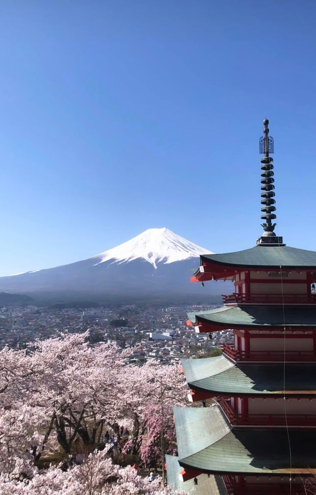

Hōnen‑in : un temple secret au cœur de Kyoto
Hors des sentiers battus : un refuge de mousse, de silence et de jardins méditatifs pour redécouvrir Kyoto dans sa sérénité.
Quand y aller
À l’aube ou en fin de journée, lorsque le flux du chemin des philosophes se calme. Privilégie les jours de semaine pour profiter pleinement du silence et du charme discret de l’entrée au portail de mousse.
Sur place
- Silence et respect (lieux de culte actifs).
- Photos : autorisées dans le jardin, mais sans flash .
- Jardins : reste sur les sentiers, ne touche pas aux mousses.
Idée : combine avec un sanctuaire voisin (torii, ema, omikuji).